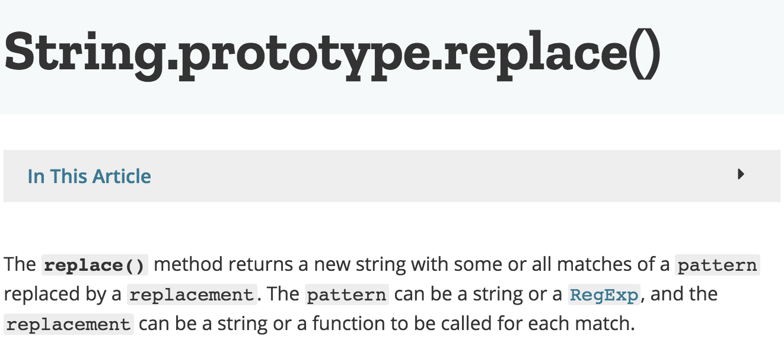

Property-based Testing
屈鉴铭
软件测试
不写测试的理由
- 麻烦
- 没创造性
有人认为可以不写测试, 没人认为软件不需测试.
测试是连接实现代码和业务需求的桥梁.
测试的好处
- 测试是向需求方证明软件稳定和正确的重要方式
- 写测试可以让代码阅读者更好的理解实现代码逻辑
- 写测试可以让你的产品持续集成和持续交付
- 写测试可以快速验证实现的正确性
- 写测试可以快速发现实现过程中出现的问题
- 写测试可以帮助我们梳理和明确需求
- 写测试可以用来衡量软件维护和二次开发的成本
传统测试存在的问题
Example-Based Testing
用少量的测试采样点 (测试用例) 来覆盖待测逻辑的可能输入集合, 并将测试的结果与期望的输出进行比较.
测试驱动开发 (TDD)
Happy & Sad Paths
假设我们要测试 y = tan(x):
但是, 只有对 y = tan(x) 非常了解, 才知道:
∀ x ∈ { (2n+1)π/2 | n ∈ N }, y = tan(x) ⇒ y = ∞
而且, 即便是 Happy path, 实现也可能出错:
一个产品实例: REA
用字符串替换的方式将元数据通过 HTML 文件传输前端浏览器.
// serverConfig.regexes.page.data = /¡PAGEDATA!/
module.exports = function (platformExtractor, data) {
return readHTML(platformExtractor.data.html)
.replace(serverConfig.regexes.page.data, data);
}
测试覆盖率: 100%._
直到有一天 …
问题出在哪了?

问题出在哪了?
另一个产品实例: Quviq
Quviq found more than 200 faults in AUT@SAR Basic Software.
EBT 的根源问题
- 离散的测试采样点无法完全代表实现的输入.
- 多个模块之间的相互影响.
Property-based Testing
Test Generator:
Using random testing tool to generate tests.
A little about PBT history
- [1999] QuickCheck first release by (Koen Claessen, John Hughes).
- [2000-2004] Papers
- QuickCheck: A Lightweight Tool for Random Testing of Haskell Programs (ICFP)
- Testing Monadic Programs with QuickCheck
- Specification Based Testing with QuickCheck
- QuickCheck: Specification-based Random Testing
- [2007] Erlang, Java.
- [2015-2017] PBT Patterns. Charles O’Farrell
Where can we use PBT?
EBT & PBT
add (1, 2) === 3
EBT & PBT
add (x, y) === add (y, x)
使用 PBT 测试 y = tan(x)
What about replace?
const jsc = require("jsverify");
const replaceTest =
jsc.forall(jsc.string, function (string) {
return "¡PAGEDATA!".replace(/¡PAGEDATA!/, string) == string;
});
return jsc.check(replaceTest, {size: 100});
{
counterexample: [ '$`' ],
counterexamplestr: '"$`"',
shrinks: 4,
exc: false,
tests: 57,
rngState: '0bc0184fd9ae3b5267'
}
怎样寻找 property
- SUT 做了些什么? square(x)
=x*x - SUT 没做什么? arr.sort().length
=arr.length - SUT 与已知系统有什么共性? eq(bubbleSort(arr), quickSort(arr))
- SUT 与已知系统有什么不同? isOdd(x) !== isEven(x)
PBT Patterns
Round-tripping
int.toString.toInt === int
formatter.parseDateTime(formatter.print(dataTime)) == dataTime
Different Order Same Result
list.map(x => x + 1).sorted == list.sorted.map(x => x + 1)
Some things never change
list.sorted.length === list.length
list ++ List() === list
The more things change, the more they stay the same

list.sorted.sorted === list.sorted
Compose methods
(listA ++ listB).reverse == listA.reverse ++ listB.reverse
Hard to prove, easy to verify

val sortedList = list.sorted
forall { i: Int => (i < list.length && i > 0) ==>
sortedList(i-1) <= sortedList(i)
}
Test oracle

list.par.map(x => x + 1) == list.map(x => x + 1)
Value division
isOdd(anyOdd) === true
isOdd(anyEven) === false
Generators
基本生成器
import org.scalacheck.Arbitrary._
arbitrary[String].sample.get
// "挥Ⱡ⾦墑릺亶 䫮쳤述䂢ࢴ浞滗ᢣ௸⮡噽隮焃峟"
arbitrary[Int].sample.get
// -830952424
arbitrary[Boolean].sample.get
// false
容器生成器
arbitrary[List[Int]].sample.get
// List(-2147483648, 780907473, 2147483647, 2147483647, 1)
arbitrary[Set[Boolean]].sample.get
// Set(true, false)
arbitrary[Option[Boolean]].sample.get
// Some(true)
arbitrary[Tuple2[Int, Boolean]].sample.get
// (-866750280,true)
选择生成器
frequency(4 -> 1, 6 -> 2).sample.get // 2
oneOf(const(1), const(2)).sample.get // 2
choose('a', 'z').sample.get // c
条件生成器
choose(0, 200) suchThat (_ % 2 == 0) // 126
组合生成器
sealed abstract class Tree
case class Node(left: Tree, right: Tree, v: Int) extends Tree
case class Leaf(v: Int) extends Tree
val genLeaf = arbitrary[Int].map(Leaf(_))
val genNode = for {
v <- arbitrary[Int]
left <- genTree
right <- genTree
} yield Node(left, right, v)
def genTree: Gen[Tree] = oneOf(genLeaf, genNode)
PBT 测试报告
如果测试报告中指出下方的输入会导致 SUT 错误, ……
"挥HⱠ⾦墑y릺亶 (䫮쳤述䂢$`浞滗ᢣ௸⮡噽隮焃峟"
"$`"
jsverify 失败后的测试报告:
{
counterexample: [ '$$' ],
counterexamplestr: '"$$"',
shrinks: 4,
exc: false,
tests: 388,
rngState: '08025de13ac94f7b68'
}
ScalaCheck 失败后的测试报告:
! Falsified after 5 passed tests.
> ARG_0: 0
> ARG_0_ORIGINAL: 2147483647
Shrinking

State Machine
Callbacks Command Generator
override def newSut(state: Int): Counter = new Counter
override def genInitialState: Gen[Int] = Gen.const(0)
override def genCommand(state: Int): Gen[Command] = Gen.oneOf(Inc, Reset, Get)
case object Inc extends UnitCommand {
def preCondition(state: Int): Boolean = true
def run(sut: Counter): Unit = sut.inc
def nextState(state: Int): Int = state + 1
def postCondition(state: Int, success: Boolean): Prop = success //assertion
}
PBT 的优势
- 更可靠 (更容易寻找系统的边界和 Bugs)
- 更好的描述性
- 更少的测试 (一个 PBT 可以覆盖多个 EBT 才能覆盖的逻辑)
- Fail-fast
- 在并发情况下更可靠 (Race condition)
- 迫使开发者思考 (Make testing much more interesting)
- 迫使开发中写出更加干净的代码 (Pure functional Best practice)
PBT & TDD
- TDD 基于 EBT, 是一种程序设计的良好方式
- PBT 能够弥补 TDD 的很多不足, 使得代码更加可靠稳定.
- 混合 EBT & PBT
languages
| Language | Library | Language | Library |
|---|---|---|---|
| C | theft | C++ | CppQuickCheck |
| Clojure | test.check | Coq | QuickChick |
| F# | FsCheck | Go | gopter |
| Haskell | Hedgehog | Java | QuickTheories |
| JavaScript | jsverify | PHP | Eris |
| Python | Hypothesis | Ruby | Rantly |
| Rust | Quickcheck | Scala | ScalaCheck |
| Swift | Swiftcheck |